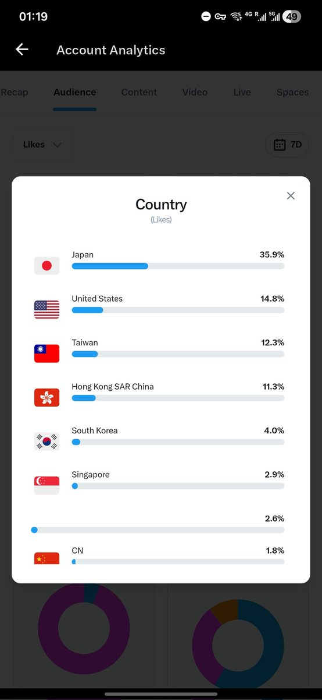

Aoi M
@aoim33
让他们去理解 国 country 这个词原本就是由 地区 这个含义发展出来的这件事还是太困难了

Aoi M
@aoim33
对此我的评价是一些人只是逮着日本动漫这一个羊毛薅，因为对面不会反抗，而且 gbc 承载了他们所谓「喜欢的最后的净土」的意淫的强加于人的政治正确
而他们有胆子拿着这张图去和马斯克对线吗？
他们不敢
甚至有些口嗨得爽的人开的车就是特斯拉 https://t.co/JTBDj1QPUY https://t.co/fM5jEyGrxL